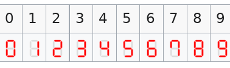

This page will track some notes and TILs for AoC2021, which I will be completing in rust – a language I am still learning.
Solutions are hosted here. If a day isn’t very interesting, I won’t post a writeup for it.
Day 6
So many lanternfish! The key to this puzzle is to represent the lanternfish as a histogram rather than creating a list of all the lanternfish. See solution.
Day 7
Problem Solution This was an interesting one. Find the problem here.
For part a) we can note that given a set of numbers \(x_1, x_2, x_3 \dots x_n \) the point \(p\) that minimizes the cost \(C_a\), \( \sum^n_{i=1} |x_i - p| \), is the median of the set.
For part b), however, the distance cost, \(C_b\) is the sum of the sequence of numbers up to the point \(p\), i.e. for a distance of \(5\) we have \(C_{a,i}=1+2+3+4+5\). We can then note that we can apply Carl Gauss’s trick for finding the sum of of an arithmetic progression.
$$C_b = \sum^n_{i=1} \frac{(d_i)(d_i+1)}{2} = \\ \sum^n_{i=1}\frac{(p-x_i)^2-|p-x_i|}{2} $$ Then, we may take the derivitive of the above equation, doing a classic Calculus 1/2 optimization problem, and find that we may minimize cost when \(C_b' = 0\).
$$ C_b' = \sum^n_{i=1} \frac{2(p-x_i) + sgn(x_i-p)}{2} = 0 $$ Where the sign function is a function which extracts the sign of a number.
Then, solving for \(p\) gives us
$$ p = \frac{\sum^n_{i=1}x_i}{n} - \frac{\sum^n_{i=1}sgn(x_i-p)}{2n} $$
which is simply the mean of of the set, \(\pm\frac{1}{2}\).
Day 7 was pretty neat.
Day 8
Day 8 can be solved by inspection and treating it as a logic puzzle.

Inspecting each digit we observe that 1, 4, 7, 8 have an unique number of lit-up segments. We can then use this to decode which patterns correspond to which numbers.
- 9 is the only 6-segment which contains the all the segments of 3
- 0 is the only remaining 6-segment which contains the segments of 1
- 6 must be the remaining 6-segment
- 3 is the only 5-segment which contains the segments of 1
- 2 is the 5-segment which contains 2 segments of 4
- 5 is the 5-segment which contains 3 segments of 4
Day 9
Just a recursive flood fill problem
Day 10
Braces matching problem. This is a fairly common problem that can be solved recursively or with stacks, so I’ll just link to a stackoverflow solution that uses the same stack method that I used.
The key observation to make is that for part b the remaining open brackets in the stack for an unbalanced string are the ones that must be matched up for it to become balanced.
So to create the string we can just reverse the stack, substitute closing brackets for opening ones, and collect it into a string.
Day 12
Can be solved by a BFS and keeping track of the nodes we’ve visited.
This was pretty interesting as I am used to c-style graphs and those don’t really exist in rust because of rust’s stringent memory safety.
There is a way around this using arenas but I’m far too lazy to actually do it – so HashMap it is!
Anyhow this lead me down a small rabbit hole regarding how things work in rust which brought me to these two excellent articles:
Day 13
Not much of note here for day 13 except for a really cute end solution:
|
|
Day 14
Look for patterns (recall, lanternfish!).
As we only care about the most and least frequent elements in the polymer we can note that each pair after a polymerization step gives rise to two new pairs – which can use a HashMap to keep track of the pairs of elements and their counts.
So:
- We can start with a
HashMapof the counts of each element in the polymer.
|
|
- Iterate through polymerization steps
|
|
- Count up the elements
|
|
Day 15
Just use Dijkstra™!
In order to complete part 2 speedily we will have to implement dijkstra using a priority queue, a data structure which has
the nice property of being able to extract the minimum element in \(\mathcal{O}(1)\) time.
Fortunately rust has this built in in the form of std::collections::BinaryHeap alongside an example implementation.
|
|